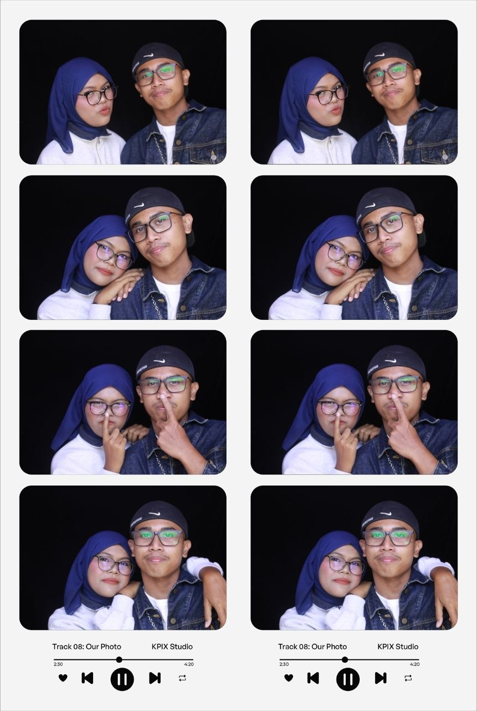

A little surprise, made just for you
Hi, sayang ❤️
Baby made this little place just for sayang, sebab ada benda yang baby lagi senang tunjuk melalui little things macam ni.
Please explore everything sampai habis okay? 🤍

My favourite place is wherever you are. ❤️
A place for us
Our Little World
Our story, one little moment at a time
Our Little Memories 📸
Tap any photo, sayang. Every picture has a little story behind it. ❤️
Whenever you need me
Open When...
Pick one. Read it slowly. And remember baby is always on your side.
One thing I want us to remember
It's us against the problem.
Not me against you. Not you against me. If something hurts, we talk. If one of us makes a mistake, we learn. And if things get hard, we face them together.
— Baby ❤️